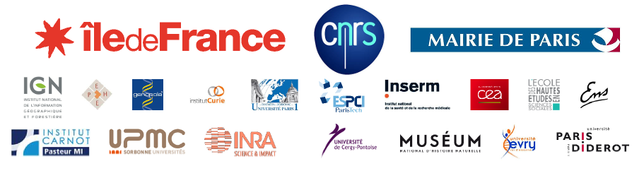

Auteurs
- David Chavalarias, CNRS-CAMS/ISC-PIF, responsable scientifique et cartes de la science,
- Samuel Castillo, CNRS-ISC-PIF, visualisations interactives et front end,
- Maziyar Panahi, CNRS/ISC-PIF, analyse des méga-données, back-end et visualisations
Partenaires institutionnels
Nous remercions pour leur soutien:- Institut des Systèmes Complexes de Paris Ile-de-France (CNRS and partners)
- Centre d’Analyse et de Mathématiques Sociales (CAMS, EHESS)
- Universcience, Cité des Sciences et de l’Industrie
- Projet Mastodons ARESOS,
- Thomson Reuter Web of Science.,
Crédits
- SigmaJS pour le moteur de visualisation de graphes sous javascript,
- Cortext pour le text-mining et la génération des cartes,
- Gargantext pour le text-mining et le travail avec les cartes,
- Gephi pour le travail sur les cartes,
- Twitter API,
